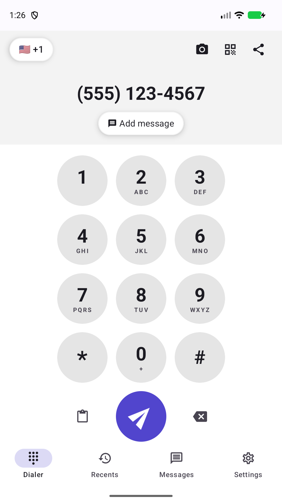

A number.
A message.
An open conversation.
Open a chat without saving a temporary contact. Enter or paste a number, prepare your message and continue in your selected messaging app.
Keep contacts tidy
Choose the country code and enter a number to open a conversation.
Reuse your messages
Save frequently used text and select a template when you need it.
Return to recent numbers
Find a previous number and prepare another conversation.

Direct Dialer is an independent Android utility that opens chats in WhatsApp or WhatsApp Business using public click-to-chat functionality. The destination app must be installed; you review and send the message there. The app includes ads and optional paid features.
WhatsApp is a registered trademark of WhatsApp LLC. Direct Dialer is independently developed by Cazalla Squared Software and is not affiliated with, endorsed by, or sponsored by WhatsApp LLC.
The Android app is currently unavailable on Google Play.